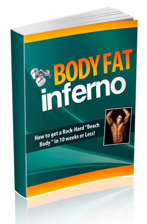

I'm going to keep this short. Summer is around the corner and you know what that means...
Now BIG question is this: Are you going to be too self conscious to take your
shirt off come beach season? I know the feeling. I've never been "ripped" in my life. Yeah, I'd go to the gym 4-5 times per week and work out hard, put in time doing cardio every week. Sure, I had some muscle mass and was a little vascular, but I've never had "abs" - at least ones you could see. I've never been lean to the point where I didn't feel like I had to flex or suck in to appear in shape. I didn't have a lean, muscular physique like some of my friends. You know those people. I'm sure you have friends like that... People that are totally cut have a level of confidence
that attracts people to them like a magnet... (...including all the women!) I wanted to be like that; I wanted that sculpted physique and the confidence that came with it. Kind of like being on the "inside". Every time summer comes around though, I get the same feeling...
I promised myself this summer would be different. I wanted to get lean once and for all, to go out during the summer and have people notice my transformation. Feel confident in tighter clothes, and not hesitate taking my shirt off at the beach. More importantly, I decided to go into the Air force. But one glaring problem stood in my way: I had to be under 160 pounds to join. At the time, I clocked in at a solid 185 and wasn't making any progress weight-wise. I had to lose over 20 pounds, and I only had a
12-week window to do it in. Lucky for me, I had years of training experience on my side. After all, I'd been going to the gym every week for years. I had this... I thought with all the years I'd been working out A couple weeks later, after pouring hours
into cardio and keeping an even more strict diet than I had before, I was only
down ONE pound.
that I knew how to get lean and ripped. But then I had a "rude awakening"... At that rate, I'd never get there. I needed something else. Something that worked - and worked FAST. I was at the gym down the street from my house when I ran into a buddy of mine from high school. I hadn't seen him in a few years, and I didn't even recognize him at first. Probably because he was doing hand-stand push-ups against the wall, pushing up his entire body weight for multiple reps. People were looking at him stunned - he was probably the most ripped guy at the gym and it's likely no one had ever even seen anyone do a hand-stand push up before. Plus he had the confidence to pull it off. I didn't know what to think. All I remembered was that this dude wasn't THAT in shape in high school. He may have been lean, but now he looked like he was all lean, ripped muscle. This guy was obviously doing something that was
working like CRAZY, something I wasn't doing. So I figured what the hell, I'll just ask him. What he told me next blew me away. He didn't spend hours in the gym every day. Didn't lift weights or train like a body builder for muscle mass. He didn't even spend hours every week doing cardio. Instead, he told me he got ripped only working out
for 30 minutes a day, 5-6 days a week. His secret? ...Cardio-style circuit routines. Workouts that were "Crossfit"-style. At first, I didn't know what "Crossfit" was, what the concept was... I thought I knew all about "circuit training", but I was dead wrong. There was a certain way to do it that maximized results in as short of a time frame as possible. A better way than you'll read about in any book. One that gets results after only a month - and can help you shed body fat in only 30 minutes a day… I was IN. After all, I wasn't making progress with
what I was doing and the clock was ticking. I had him help me out and create a basic plan I could follow - both a workout plan and a diet plan - and I immediately got to work. I changed up my diet first - that was the easy part. The program wasn't TOO strict, and I'd done diets for cutting before. You'll feel a little hungry because you're "eating" less food, but hey - I was in crunch time here. I just had no idea what to expect for the workout part of this... The first workout lasted 32 minutes and I sweated more during that workout than with anything else I'd ever done - even multiple hour lifting sessions. I kept doing it, and the results were unbelievable. Not only was I actually losing weight, but I was
seeing physical results within a single week of following this plan. My friends and family started to notice first. I'd go out and people would ask what I was doing, how I was making such rapid changes. Then it hit me. I knew right away that I'd found the "secret sauce"
for getting lean and ripped. This summer, I was going to reach my goals. I wouldn't be sucking in at all, and would instead actually have defined abs. More than that, I thought I was actually going to be able to drop the weight in time to join the Air force. That was my main motivation. It's important to have a motivation like that since it keeps you pushing and really striving. I kept going, following the plan my friend devised and really applied myself to the program. The result? I Dropped 20 Pounds and Lost 8% Body Fat in Just
10 Weeks. And Then An Idea Hit Me Like Lightening... That's when I realized something...
Here I was, 10 weeks later and down 20 pounds and close to 10% body fat. My friends and family were all asking me what I was doing, so I figured, "Why not create a course for others to follow, too?" If it works for me, it has to work for others, right? So that's exactly what I did! I wrote down exactly what I was doing - exactly what my friend showed me weeks ago - and put it all into a short, highly actionable, no-BS guide anyone could follow to get REAL results FAST. That's exactly what I have for you here. Introducing... 
I hold nothing back in this value-packed guide... To make everything even easier, I even broke the Body Fat Inferno into 2 parts: the Workout Plan and the Diet Guide. Between these two parts of the Body Fat Inferno guide, you're going to discover:
This doesn’t even scratch the tip of the iceberg, either. This Is The Exact Recipe For Getting a Lean, Ripped
Body In 10 Weeks or Less... Listen… If you're not where you want to be, it's NOT your fault. People are suckered by the media all the time. There's so much misinformation out there and it's hard to avoid when everything seems like "the next best thing".
Unfortunately, all these new books, courses, advertising, and straight-up B.S. are preventing you from getting the body you want. It makes sense, doesn't it? ...When you're chasing new programs and dieting strategies all the time or trying out the latest and greatest supplements, you never give your body enough time to grow and make progress. Sure that's awesome for the companies taking your money - but it leaves you exactly where you've always been... ...Stuck on that "square one", unable to lose that last bit of body fat or building your muscles and getting a lean, toned physique. The Body Fat Inferno is meant to provide a simple, repeatable, affordable strategy for getting lean and ripped... And that actually works! And as if THAT wasn't enough... I’m Even Throwing in a Couple Bonuses to Make
Your Decision a No-Brainer I wracked my brains to figure out how I could provide even more value with this, and here's what I decided to do: I created TWO bonuses for you that make this program even easier to follow, both inside the gym and out! Bonus #1: Workout "Cheat Sheets" I know how frustrating it can be starting a new program when you don't know the exact program. You have to keep looking at your phone for the next step or exercise or have to keep a notebook with you and keep flipping through it. Sometimes you have to keep running back to your locker to look at the routine. Let's face it: that's a pain in the ass. What I've created is something easier... I broke down the entire workout routine into what I call "Cheat Sheets". These are small, condensed sheets that you can fold up and just put in your pocket to easily reference the workout program every step of the way. I've even included the exercise variations along with the main workout routine so you can mix and match on the fly. Bonus #2: Diet Plan Shopping List The other thing I hate most about starting new diet and workout programs is that I'm always at a lose when it comes to shopping. I wish I could just have a list - short and sweet - that I could print out and take to the store with me to make it easier. So that's exactly what I did! I went through the diet plan I followed in the Body Fat Inferno and wrote down exactly what to buy for the entire program - even in weekly portions. You're getting a full shopping list that you can immediately print out and take with you to get in and out of the grocery store in 15 minutes (and for cheap!). Would You Like To "Test Drive" This Entire Program?
I know this fitness program works and you'll see that within one week of following it. And to prove that, I want to let you test drive it for a full 60 days. Try out the Body Fat Inferno today, bust ass with it and really apply yourself. And any time within the first 60 days - if you're not completely satisfied with it or you don't think it's working (no way that could happen if you follow it) then I'll send you back every penny and we part as friends. You really have nothing to lose and everything to gain...
You'll never have that feeling like you could have done more. Like you have to suck in, or worry about taking your shirt off. Never have to worry about those "love handles" again... How Much Is Your Dream Physique (And All That
Comes With It) Worth To You? Can you even put a price tag on that? I want ANYONE to be able to try out this program, so I've decided to open the doors at a rock-bottom price of only $27 for a limited time. You won't find a program this effective for this cheap anywhere else... So now the choice is yours...
You can either keep doing what you're doing, not seeing results or really getting anywhere (and probably wasting money every month on supplements and food that's not working)... ...OR... You could follow a plan that's gotten REAL results for multiple people and is based on actual philosophies that are proven to reduce body fat and build lean, solid muscle. You pick. But make sure to decide soon. Summer is coming fast. Three months from now, you'll wish you'd
started today. All you have to do is take the first step. Take the first step in getting that lean, ripped physique you've always wanted. Here's what to do next... Click the Buy Now button below to get Instant Access
to Body Fat Inferno and all the bonuses NOW: To Your New Body, Your Name PS - Don't forget... I'm letting take this program out for a full 60-day test drive so you can see for yourself it really does work. (That's almost DOUBLE the time it will take to achieve results with this program.) At any time during those 60 days, if you're not completely 100% satisfied - or if you don't see any results after really applying yourself to this program and working hard at it - then I'll refund every penny to you and we'll part as friends. All the risk is on me! PPS - Make sure to take before/after pictures and send them to me when you see results so I can feature you as a "Body Fat Inferno Success Story"! Terms | Legal Disclaimer | Privacy Policy | Support | Affiliates
|